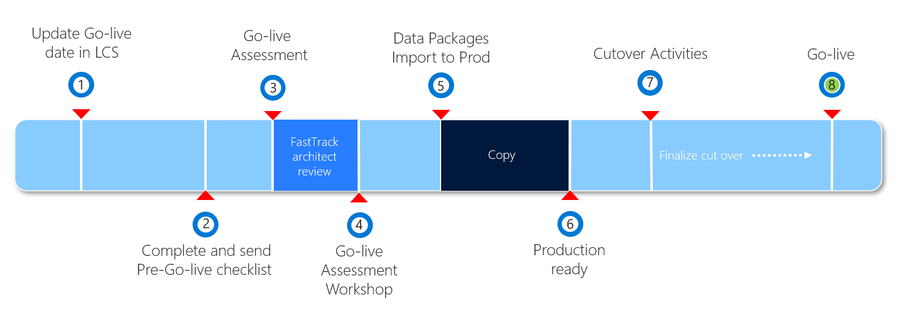

Prepare for Human Resources go-live
This topic describes how to prepare to go live with a Dynamics 365 Human Resources project by using Microsoft Dynamics Lifecycle Services (LCS).
This graphic shows the phases of the go-live process.

The following table lists all the steps in the process, the expected duration, and who is responsible for the action.
| Phase | Action | Duration/When | Who | Notes |
|---|---|---|---|---|
| 1 | Update go-live date in LCS | At the latest 2-3 months in advance | Partner/Customer | The milestone dates should be kept up to date on an ongoing basis. |
| 2 | Complete and send checklist | After user acceptance testing (UAT) is complete | Partner/Customer | Follow the instructions provided in FastTrack go-live assessment. |
| 3 | Project assessment (FastTrack) | FastTrack Architect* | Architect delivers assessment after checklist is received and continues review until questions are clarified and mitigations are in place, if applicable. | |
| 4 | Project workshop (FastTrack) | FastTrack Architect* | ||
| 5 | Data package imports | Depends on the project | Partner/Customer | Follow the instructions in Data management overview. |
| 6 | Production ready | After all previous steps have been completed | Partner/Customer | Partner/Customer can take control of the production environment. |
| 7 | Cutover activities | Depends on the project | Partner/Customer | |
| 8 | Go live | Depends on the project | Customer |
Important
*Steps 3 and 4 are only completed for customers who qualify for FastTrack.
Completing the LCS methodology
A major milestone in each implementation project is the cutover to the production environment. The process of completing a step has two parts:
- Do the actual work, such as a fit-gap analysis or user acceptance testing (UAT).
- Mark the corresponding step in the LCS methodology as completed.
It's a good practice to complete the steps in the methodology as you make progress with the implementation. Don't wait until the last minute. It's in the customer's best interest to have a solid implementation.
UAT for your solution
During the UAT phase, you must test all the business processes you've implemented, and any customizations you've made, in a Sandbox environment in the implementation project. To help ensure a successful go-live, you should consider the following as you complete the UAT phase:
- We recommend that your UAT process starts with a clean and fresh environment where the data from your GOLD configuration is copied into the environment prior to the start of the UAT process. We recommend that you use the production environment as your GOLD environment until you go-live, at which point the environment becomes production.
- Test cases cover the entire scope of requirements.
- Test by using migrated data. This data should include master data such as workers, jobs, and positions. Also include opening balances, like leave and absence accruals. Finally, include open transactions, such as current benefits enrollments. Complete testing with all types of data, even if the data set isn't finalized.
- Test by using the correct security roles (default roles and custom roles) that are assigned to users.
- Make sure that the solution complies with any company- and industry-specific regulatory requirements.
- Document all features and obtain approval and sign-off from the customer.
Mock go-live
Prior to your go-live, you must perform a mock go-live to test the steps required to cutover from your legacy systems to the new system. You should perform your mock go-live in a sandbox environment and include all the steps in your cutover plan.
- We recommend you use the production environment as the GOLD configuration environment until the go-live.
- Ensure that you have a strong governance process in place to protect the production environment from accidental transactions or updates prior to the go-live.
- When you're ready to perform UAT or the mock go-live, refresh the sandbox environment from the production environment. For more information, see Copy an instance.
- Test each step of your cutover plan in the sandbox environment and then validate the sandbox environment by performing spot checks or performing tests from your UAT scripts in the environment.
- Tests should include all data migrations including transformations needed for the go-live.
- The process should include a practice cutoff of any legacy systems.
- Be sure to include any integration cutover steps or external system steps in your mock cutover.
- If you find any issues during the mock cutover, a second mock-cutover may be required. For this reason, we recommend that you plan for two mock cutovers in your project plan.
FastTrack go-live assessment
Customers who are qualified for FastTrack and are engaged with a FastTrack Solution Architect will complete a go-live review with Microsoft FastTrack. For more information, see Microsoft FastTrack.
About eight weeks before go-live, the FastTrack team will ask you to fill in a Go-live checklist.
The project manager or a key project member must complete the go-live checklist during the pre-go-live phase of the project. Typically, the checklist is completed four to six weeks before the proposed go-live date, when UAT is completed or almost completed.
When you've completed the go-live checklist, email it to your FastTrack Solution Architect. Always include a key stakeholder from the customer and the implementation partner on the email.
After you submit the checklist, your FastTrack Solution Architect will review the project and provide an assessment that describes the potential risks, best practices, and recommendations for a successful go-live of the project. In some cases, the solution architect might highlight risk factors and ask for a mitigation plan.